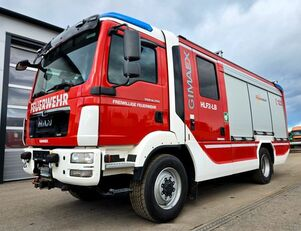
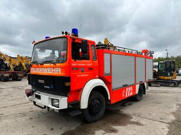

Пожарни Автомобили



РСПБЗН - Троян обслужва територия от 1100 кв.км с население около 36 000 жители, разпределени в две общини, както следва:
Адрес: гр. Троян 5600, ул. “Георги С. Раковски” № 1
Телефон: 068 668 642
Email: fscp-rs-troyan@mvr.bg
Приемно време: Сряда, 14:00–16:00
| Екип | Име | Длъжност |
|---|---|---|
| A | Николай Тодоров | Шофьор |
| A | Ваня Коларова | Пожарникар |
| A | Петър Ангелов | Пожарникар |
| A | Стефан Михайлов | Спасител |
| A | Александър Маринов | Спасител |
| Б | Владимир Колев | Шофьор |
| Б | Христо Александров | Пожарникар |
| Б | Яна Русева | Пожарникар |
| Б | Пламен Захариев | Спасител |
| Б | Борислав Трифонов | Спасител |
| В | Калоян Стоянов | Шофьор |
| В | Атанас Костов | Пожарникар |
| В | Тодор Димитров | Пожарникар |
| В | Диана Станчева | Спасител |
| В | Красимир Николов | Спасител |